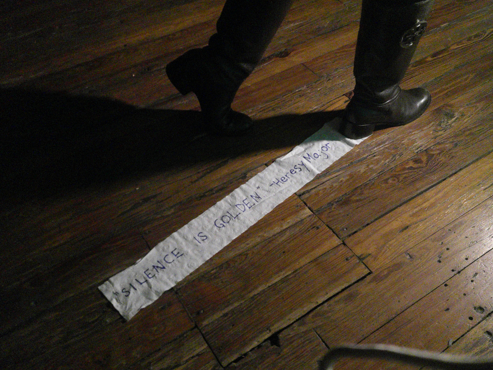
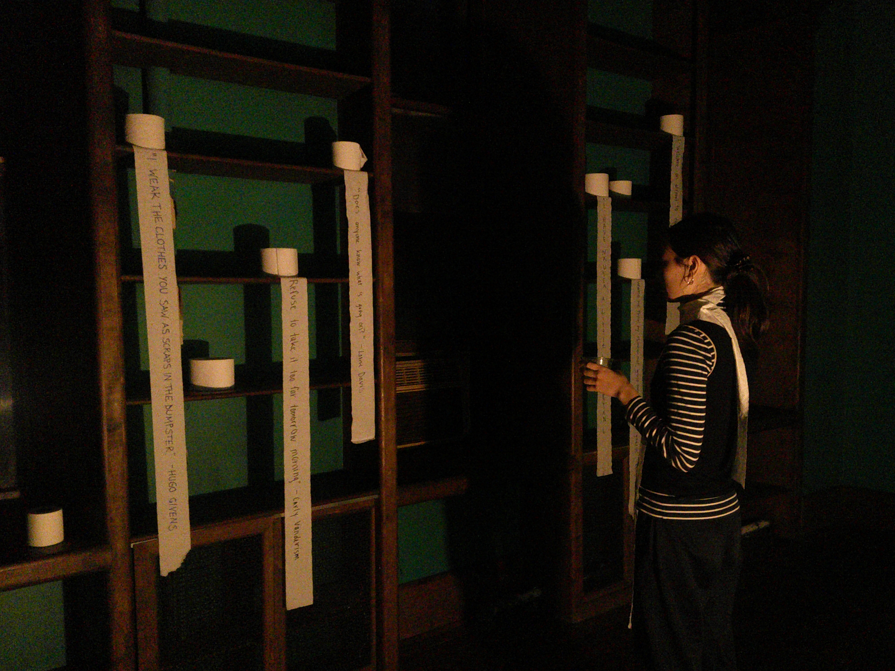
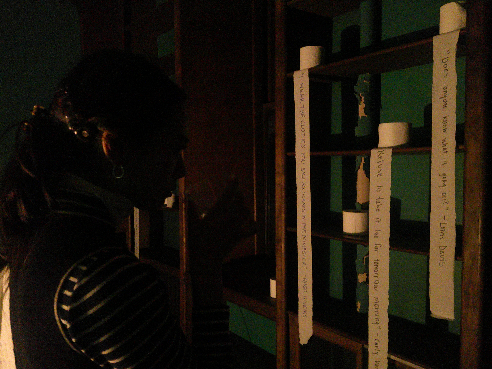
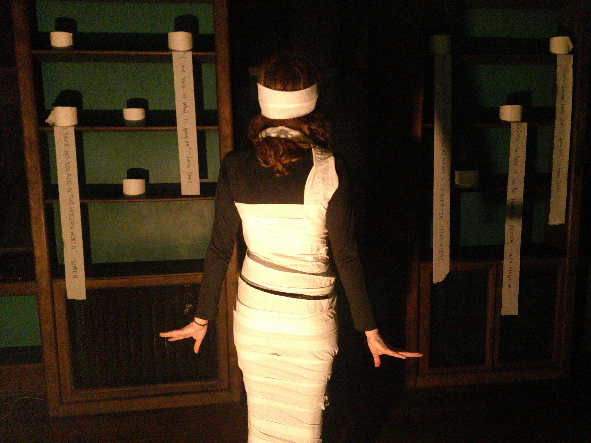
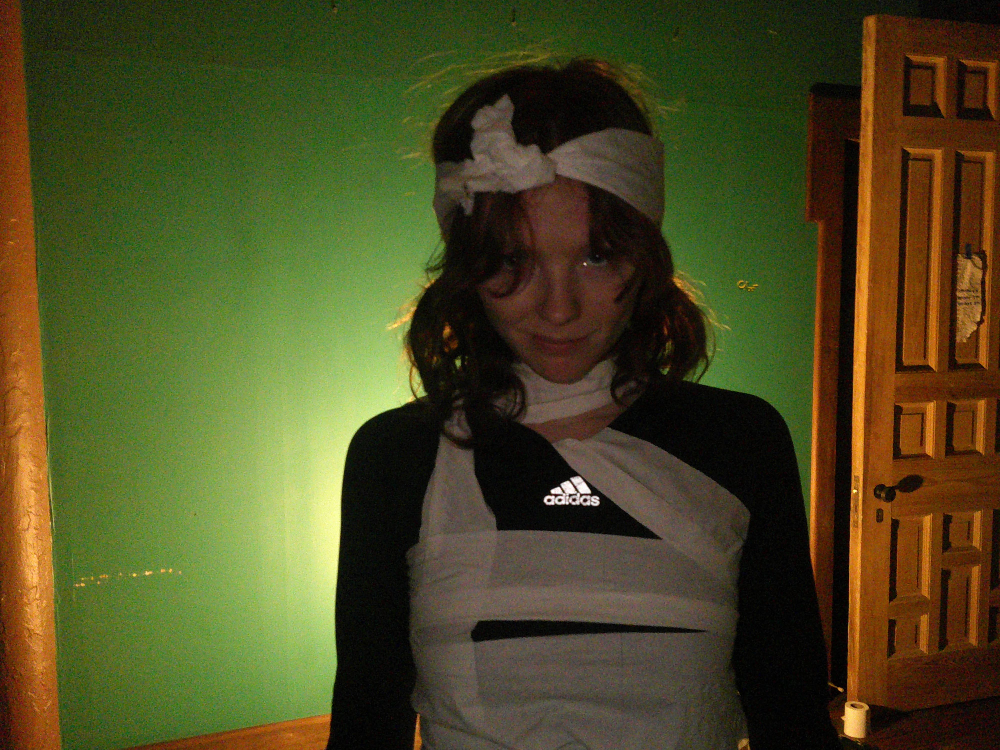

Silence is Golden
Organized by Heresy Major at Mary's Governance in 2026. Featuring words by Bebe Cleaver, Lorne Davis, Hugo Givens, Carly Vanderism, Ryan L, Jaren Missimi, and Soren.
Unfortunately, there was not a huge turnout, but the attendee was given a free scarf in commemoration of the opening. Due to a misunderstanding, the second attendee was doubly cast in the performance and thus did not receive a free scarf.
  Reading by Lorne Davis
Editor's note: Must of Davis' reading was sadly rendered unintelligable due to a violent coughing fit. That which was able to be transcribed appears below. A * denotes a single cough. Longer or more complicated coughs that bleed into eachother and thus cannot be easily counted are denoted in writing.
** * Honesty! Honesty! THE LAST THING I want is to be accused of being a simpleton. Is this thing on? Oh. ** Well I don't know what I think! * * I'm a man who has lived many lives, isn't that important? I've sold cars, I've played games, I've fallen off a jet-ski, I've [unintelligable], I had a one-sided love affair twice, [Long coughing fit] I've gotten shot in the back, been castrated by the court of my peers, sublimated myself for the media circus, done an ecommerce photoshoot, I've even worked in tech. ** I've dabbled in it all, you see, but at the end of the day when I'm all alone I return to it again and again. My perfect * * seminal quote that I live by. * [Another long coughing fit] But no one else wants to speak in absolutes anymore. And, like I said, the last thing I want is to be accused of being a simpleton. [unintelligable murmur] But am I so wrong for wanting that perfect mantra? Live every day like it's your last. And is it dishonest that my opinion changes violently, drastically, and unpredictably? Sometimes, maybe. [10 seconds of coughing] The truth is that I don't believe the power of words is always greater than the power of silence. What good are words with this terrible case of brain fog? I can barely spell. [I could not for the life of me make out what he said here either -- Lindsay] I'd like to think that I would have been a scribe in Ancient Egypt but deep down inside I know that I'm lying to myself.
Striptease Documentation
Footage from Stip Tease[sic], which occurred at 8PM:
 